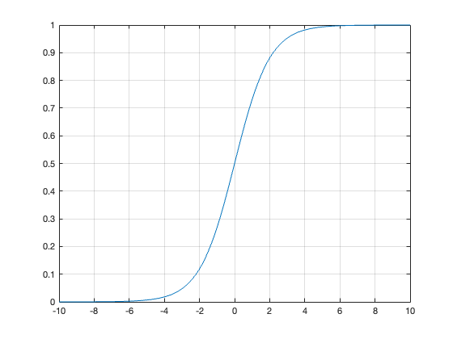

% % This is the part for Problem 1 % % % % This is the part for problem1 subquestion 1 x1 = -10:.01:10; sigmoid(x1) plot(x,sig_function); grid on % plot(costFunction (0.5, 10, 20)); % parts for running routines for subquestion 3. functionExample = @cos; x2 = fminbnd( functionExample, 0 ,10); disp(x2) x3 = fminsearch(functionExample,0); disp(x3) % % % % The sigmoid method (require extra package "Deep Learning Toolbox") % % % % Following instructions from slides, and the mathworks instructions % % % % https://www.mathworks.com/matlabcentral/fileexc % hange/51007-sigmoid?focused=3876707&s_tid=gn_loc_drop&tab=example function sigmoid(x) sig_function = 1./(1+exp(-x)); plot(x,sig_function); end % cost function for the log regression % sig = 1./(1 + (exp(-(X * theta)))) function [J, grad] = costFunction(theta, X, y) hx = sigmoid(X * theta); m = length(X); J = (-y' * log(hx) - (1 - y')*log(1 - hx)) / m; grad = X' * (hx - y) / m; end %Hypothesis function for the log regression. % if the sigmoid > 0.5, accept, otherwise, reject. function hypoSig(x) if sigmoid (x) > 0.5 outs = true; end outs = false; end % % % % This is the part for problem1 subquestion 2 % Find the solution to the classification problem by writing your own % gradient descent method. % The slide claimed that "The gradient descent method is the same for both % linear and logistic regressions!" % following instructions provided previously function gra_dec(Gamma, max_iter, func_tol) % iteration part iter = 1; % iterations counter x = [0; 0; 0]; % initial guess fvals(iter) = F(x); progress(iter, x); while iter < max_iter && fvals(end) > func_tol iter = iter + 1; x = x - Gamma * dF(x); % gradient descent fvals(iter) = F(x); % evaluate objective function progress(iter, x); % show progress end % plot part plot(1:iter, fvals, 'LineWidth',2); grid on; title('Objective Function'); xlabel('Iteration'); ylabel('F(x)'); end % % % % This is the part for problem1 subquestion 2 % Find the solution to the classification problem by using MATLAB % optimization routines. Did you reproduce we saw in class?
3.1416
3.1416
